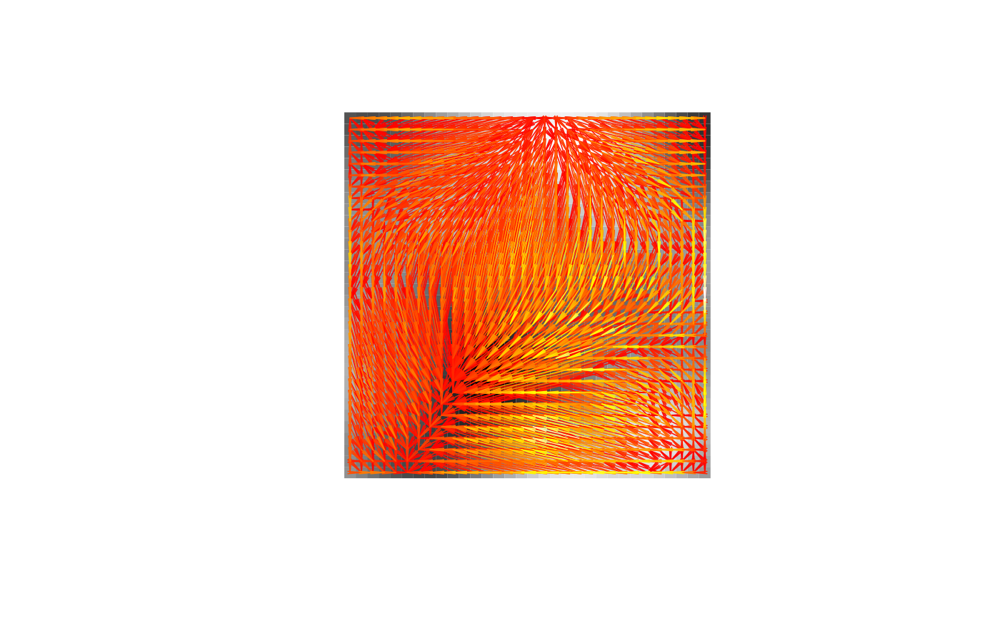

Solve Transportation Problem by Aurenhammer--Hoffmann--Aronov Method
aha.RdSolve transportation problem by Aurenhammer--Hoffmann--Aronov Method.
Usage
aha(a, b, nscales = 1, scmult = 2, factr = 1e+05, maxit = 10000, powerdiag=FALSE,
wasser = FALSE, wasser.spt = NA, approx=FALSE, ...)
transport_apply(a, tplan)
transport_error(a, b, tplan)Arguments
- a
an \(m \times n\) matrix.
ais treated as a measure on \([0,m] \times [0,n]\) with constant density on each unit square \([i,i+1) \times [j,j+1)\).- b
either a matrix such that
dim(a)==dim(b)andsum(a)==sum(b)or a data frame with three variables namedx,yandmasssuch thatsum(a)==sum(b$mass), representing a discrete measure on \([0,m]) \times [0,n]\).- tplan
a transference plan from a (to b), typically an optimal transference plan obtained by a call to
aha.- nscales, scmult
the number of scales to use for the multiscale approach (the default is \(1\) meaning no multiscale approach), and the factor by which the number of pixels in each dimension is multiplied to get from a coarser to the next finer scale.
- factr, maxit
parameters passed to the underlying L-BFGS-B algorithm (via the argument
controlin the R-functionoptim).- powerdiag
logical. Instead of an optimal transference plan, should the parameters for the optimal power diagram be returned?
- wasser
logical. Instead of an optimal transference plan, should only the \(L_2\)-Wasserstein-distance between
aandbbe returned?- wasser.spt
the number of support points used to approximate the discrete measure
b. Defaults toNAmeaning the full set of support points ofbis used. If this argument is notNA,wasseris set toTRUE.- approx
logical. If
TRUE, an approximation to the objective function is used during optimization.- ...
further arguments passed to
optimvia its argumentcontrol.
Details
The function aha implements the algorithm by Aurenhammer, Hoffmann and Aronov (1998) for finding optimal transference plans in terms
of the squared Euclidean distance in two dimensions. It follows the more detailed description given in Mérigot (2011) and also implements
the multiscale version presented in the latter paper.
The functions transport_apply and transport_error serve for checking the accuracy of the transference plan obtained by aha.
Since this transference plan is obtained by continuous optimization it will not transport exactly to the measure b, but to the measure
transport_apply(a, tplan). By transport_error(a, b, tplan) the sum of absolut errors between the transported a-measure and the b-measure is obtained.
Value
If powerdiag and wasser are both FALSE, a data frame with columns from, to and mass, which specify from which knot to which other knot what amount of mass is sent in the optimal transference plan. Knots are given as indices in terms of the usual column major enumeration of the matrices a and b. There are plot methods for the classes pgrid and pp, which can plot this solution.
If powerdiag is TRUE and wasser is FALSE, a list with components xi, eta, w and rect, which specify the parameters for the optimal power diagram in the same format as needed for the function power_diagram. Note that rect is always c(0,m,0,n). Since version 0.10-0 the list has a further component wasser.dist containing the Wasserstein distance.
If wasser is TRUE, a data frame with columns wasser.dist and error.bound of length one, where error.bound gives a bound on the absolute error in the Wasserstein distance due to approximating the measure b by a measure on a smaller number of support points.
References
F. Aurenhammer, F. Hoffmann and B. Aronov (1998). Minkowski-type theorems and least-squares clustering. Algorithmica 20(1), 61--76.
Q. Mérigot (2011). A multiscale approach to optimal transport. Eurographics Symposium on Geometry Processing 30(5), 1583--1592.
Author
Björn Bähre bjobae@gmail.com
(slightly modified by Dominic Schuhmacher dschuhm1@uni-goettingen.de)
See also
transport, which is a convenient wrapper function for various optimal transportation algorithms.
Examples
res <- aha(random32a$mass, random32b$mass)
plot(random32a, random32b, res, lwd=0.75)

aha(random64a$mass, random64b$mass, nscales=3, scmult=5, wasser.spt=512, approx=TRUE)
#> wasser.dist error.bound
#> 1 13.17158 1.161478